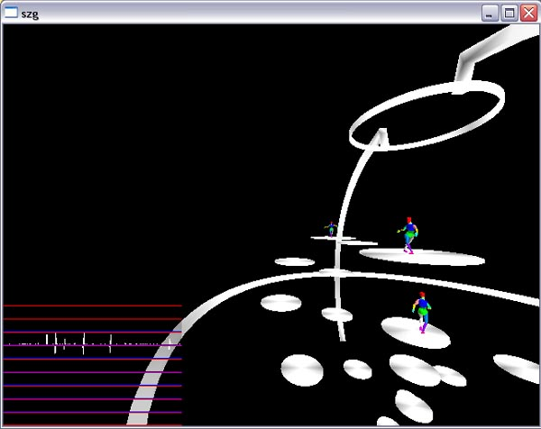

Syzygy Application Features
Miscellaneous Application Features
It is possible to pause a running distributed scene graph application by (where X is one of the szgrender's component IDs):
dmsg X pause on
The application will be un-paused by the following command:
dmsg X pause off
The application's framerate can be throttled at 5 fps by:
dmsg X delay on
This effect will be turned off via:
dmsg X delay off
A screenshot starting at raster position (A,B) and with width C and height D will be taken and stored at the top of the SZG_DATA/path as screenshot.Y.ppm, where Y is an integer representing the number of screenshots taken since the component was launched, when the following command is issued:
dmsg X screenshot A/B/C/D
The view mode (see view_mode database parameter below) can be changed by sending the viewmode message, with one from the same set of values as for the view_mode parameter, e.g. it can be set to anaglyph by:
dmsg X viewmode anaglyph
These commands also work with the master/slave applications. In this case, X should be the component ID of one of the application instances.
